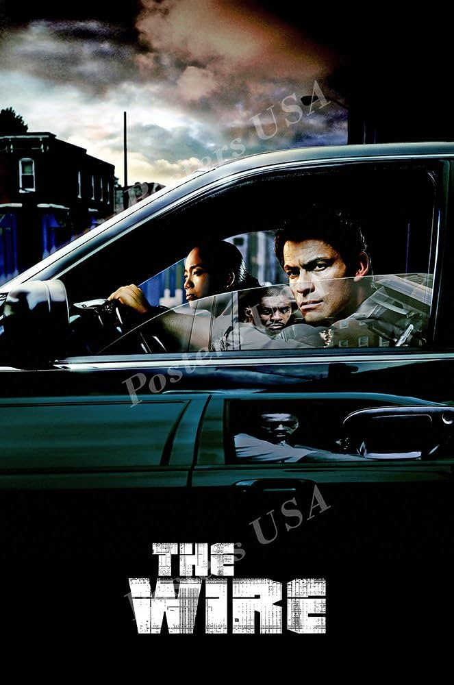

Uma obra-prima da televisão
Considerada por muitos críticos como a melhor série de todos os tempos, The Wire explora a cidade de Baltimore sob diferentes perspectivas. Criada pelo ex-repórter policial David Simon e pelo ex-detetive de homicídios Ed Burns, a série é aclamada por seu realismo literário e sua profunda exploração de temas sociopolíticos.
Originalmente, a série foi cogitada para outras emissoras, mas acabou sendo exibida na Netflix HBO, onde encontrou o formato ideal para sua narrativa complexa.
Diferente de dramas policiais procedurais comuns, The Wire mostra que tanto as instituições da lei quanto as organizações criminosas possuem suas próprias hierarquias, regras e disfunções sistêmicas que esmagam o indivíduo.

Ver Sinopse e Estrutura
A série examina as complexas relações da cidade de Baltimore. Cada temporada foca em uma faceta diferente da cidade: o tráfico de drogas nas ruas (Temporada 1), o porto e os sindicatos (Temporada 2), a burocracia governamental e política (Temporada 3), o sistema escolar público (Temporada 4) e a mídia impressa (Temporada 5).